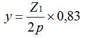
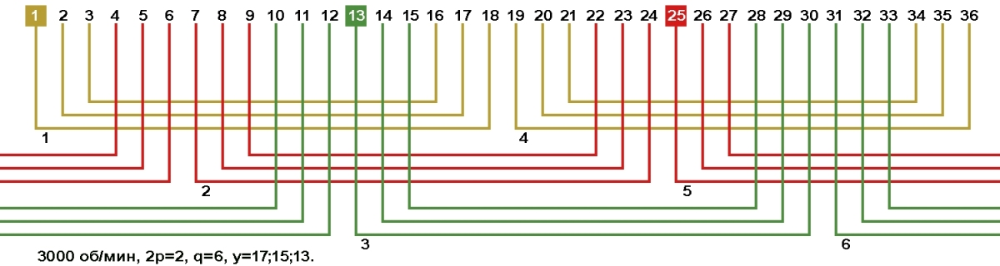
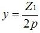
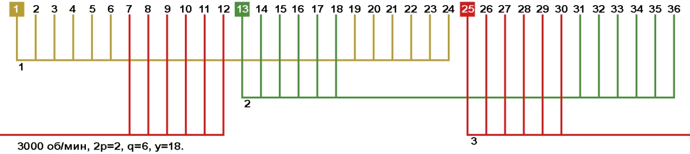
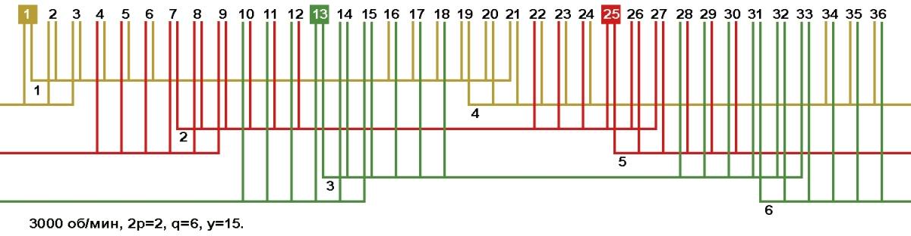
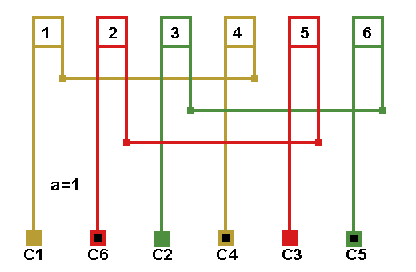
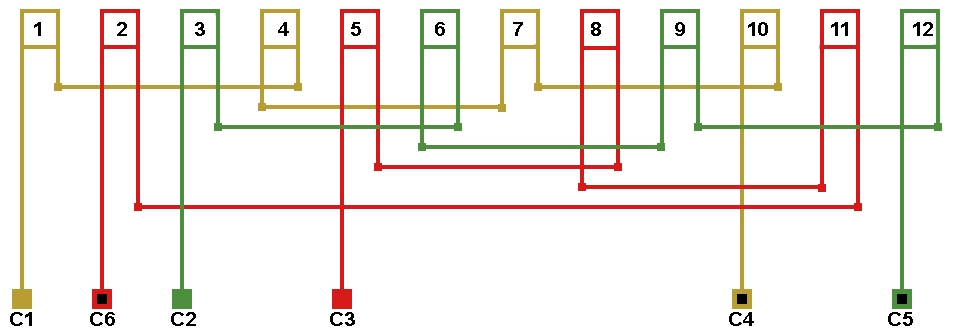
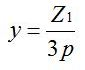

Перейти на главную страницу справочника.
Двухслойные обмотки.
- Для чего пересчитывать обмотку электродвигателя с однослойной на двухслойную? Первая причина перехода на двухслойную обмотку, это требование заказчика увеличить пусковые характеристики электродвигателя. Вторая причина перехода на двухслойную обмотку, это уменьшение длины лобовой части и соответственно экономия меди. Двухслойные обмотки с укороченным шагом по своим характеристикам превосходят однослойные обмотки.
- Расчет рекомендуемого укороченного шага для двухслойной обмотки Z1 - количество пазов статора, 2p - число полюсов.

- Число пазов на полюс и фазу Z1 - количество пазов статора, 2p - число полюсов, m - количество фаз. Количество секций в катушке двухслойной обмотки с целым числом пазов на полюс и фазу всегда равно "q".

- В схемах укладки трёхфазных электродвигателей, обмотки с рекомендуемым укорочением шага отмечены -
 .
.
Пример пересчета однослойной обмотки в двухслойную.
Электродвигатель с количеством пазов Z1=36, 3000 оборотов в минуту 2p=2, число пазов на полюс и фазу q=6.
- Однослойная обмотка вразвалку имеет следующие данные: шаг обмотки по пазам у=17;15;13 рис №1.
Рис. 1 
{kind=link}
- Расчет укороченного шага двухслойной обмотки нужно выполнять от равнокатушечной (равносекционной) обмотки

с диаметральным шагом рис №2.
Рис. 2 
{kind=link}
- После преобразования концентрической обмотки вразвалку в равнокатушечную с диаметральным шагом по пазам 18 (1-19). Шаг двухслойной обмотки получился 18 × 0,83 = 14,94, у=15 (1-16). Количество секций в катушке двухслойной обмотки с целым числом пазов на полюс и фазу всегда равно "q", число пазов на полюс и фазу в данном двигателе q=6. После расчета получилась обмотка с шестисекционными катушками и шагом у=15 (1-16) рис. №3.
Рис. 3 
{kind=link}
- Количество витков в пазу двухслойной обмотки равно количеству витков в пазу однослойной, количество витков в секции двухслойной обмотки в два раза меньше количества витков в секции катушки однослойной обмотки. При пересчёте однослойной обмотки на двухслойную с укороченным шагом нужно увеличивать число витков в пазу, а чтобы обмотка поместилась в паз сечение провода приходится уменьшать.
- Соединение катушек в двухслойных обмотка всегда выполняется конец с концом, начало с началом рисунки №4 и №5.
Рис. 4
Схема соединений двухслойной обмотки 3000 об. мин., количество параллельных ветвей а=1.

Рис. 5
Схема соединений двухслойной обмотки 1500 об. мин., количество параллельных ветвей а=1.

- Формула расчета шага двухслойных обмоток для однофазного электродвигателя.

.
22.01.2012 г.
Литература по данной теме:
Кокорев А.С. "Справочник молодого обмотчика электрических машин" 1979 г.
Мещеряков В.В., Ченцов И.М. "Пересчет электрических машин и таблицы обмоточных данных" 1950 г.